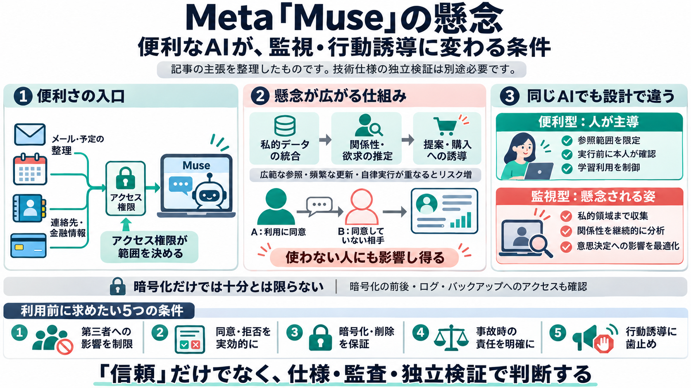

Meta’s Muse AI agent is a commercial surveillance network disguised as an AI assistant
A serious vulnerability exposed private cloud data. An external researcher discovered a security flaw that could allow a…

“便利な個人エージェント”が、私的メッセージやメール、金融情報、連絡先・関係性まで取り込み、行動誘導に使われ得る—という強い懸念。
「暗号化や削除を約束しても、実装要件が不明確なら“信頼頼み”になる」—この点を問題視しています。
A serious vulnerability exposed private cloud data. An external researcher discovered a security flaw that could allow a…
Marketplace without authorisation. In 2017, I predicted everyone would have a chatbot but warned against giving agents a…
# Paul Walsh Headline: Leading the People & Talent team at GetGround Current role: VP, People & Talent GetGround Senior…
of a model stack that Meta now believes is strong enough to stand behind at scale, wrapped in the kind of security and p…
The company said Thursday that it would lay off 10% of its workforce, about 8,000 employees, on May 20, in an effort to …